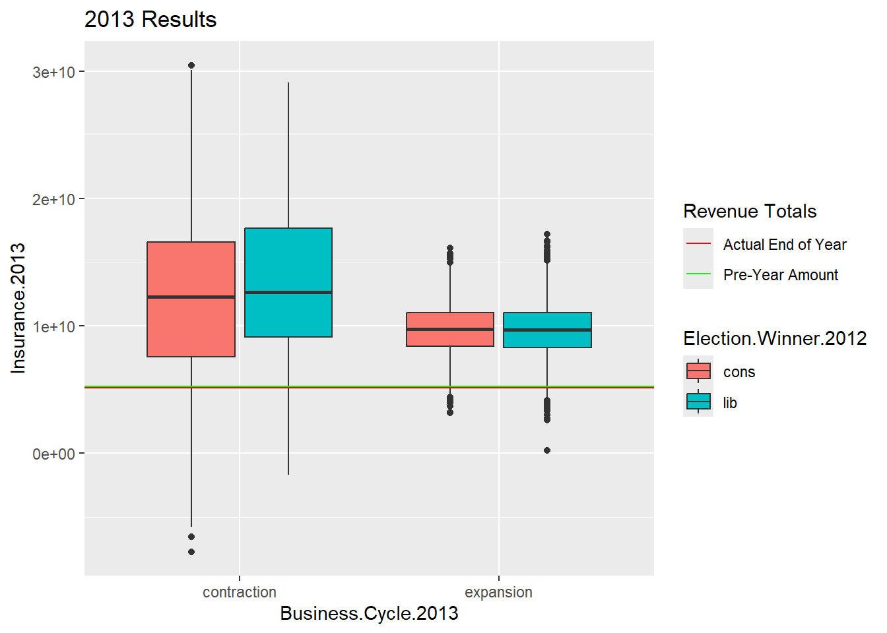

Political Risk Insurance for Canadian Oil and Gas Companies
Orin Crouse, Erin Austin, Adam Spiegler
Abstract
This paper explores the concept of Political Risk Insurance (PRI) for Canadian Oil and Gas companies. The examination is to determine whether these companies should seek out PRI with results that hope to show the benefits or consequences. Having the conditions of the country’s influence from the business cycle, rare world changing events, and federal elections. Simulations that have changes in probabilities and random distributions to cover possible outcomes and repeat a thousand times. The results show that the rare usage of PRI is simply a lack of knowledge. Another finding is that from a policy point of view, companies see an ebb and flow with revenue. So, why spend money in attempt to sway the outcome of elections if it is shown to futile.
1. Introduction
We sought to to answer the question “Why isn’t political risk insurance used more widely and freely?”. For our discussion we wanted to narrow the focus down. Down to one market in a single country. The reason to choose oil and gas was because there would be, as we hoped, more data available along with more controversies surrounding oil and gas. This would lead to better findings and stronger statements.
This idea came about because of COVID-19####*#
2. Conceptual Framework
The frame for this was to build essentially a flowchart. Starting with the election year 1998, which is as far back as we could go in finding the data (explained in later section). The year 1998 was an election for Canada and so their would be two branches off of 1998, labeled Liberal or Conservative. Given this will be the two main political parties, with one of the two usually being the winner of the elections even though there are more parties in Canada. This is the essentially same for each election year. Following an election year there is another set of branches, one for Expansion and one for Contraction. These mark what the following year would be for the business cycle of Canada. Business cycle is this case being the aggregate of the year for the country’s overall GDP. Whether or not there would be an increase or decrease, expansion or contraction, respectively In the first case we are saying given a Liberal/Conservative win in 1998, there could be a Expansion/Contraction in the year 1999. The time span we looked at is from 1998 to 2021, and in this time span there were 8 elections; 1998, 2001, 2005, 2007, 2009, 2012, 2016, 2020. Every year in between would be marked as a business cycle year. This model, as discussed more in further sections, could be built upon to add more variables, but for now we wanted see what impacted elections and the business cycle had on predicted revenue.
For the purpose of this paper we looked at the year following an election. We wanted to see if the result of that election would have an impact on the business cycle that would lead to a decrease or increase in predicted revenue. For this, it is an input of the actual amount earned by all companies. This is the combination of all companies so we see what the market produces rather than a single company. That and it would be difficult to track a single company throughout the years. A single company could be the top performer and be not be the following year or never again be the top performer. Now this could still be a wide range and differ quite a lot with companies entering and exiting the market, so we took the median amount each time. This would for better control and eliminate the risk of skewness due to outliers. The Canadian dollar (C\(\$\)) for this paper is converted into 2022 C\(\$\) to account for inflation. Also this allows us to show the true growth with the market. With the median amount is used, and then through processing, we receive a predicted amount at the end of the business cycle year. Comparing that to the actual earned amount we can see:
The growth of the market that year.
How accurate our prediction was.
How well the market preformed in these cycles.
And lastly, the comparison of the out potential outcomes.
Flowchart base
3. Data
3.1 Data Source
Data was primarily observed from The System for Electronic Document Analysis and Retrieval (SEDAR) which is a filing system developed for the Canadian Securities Administrators. Similar to the United States Securities and Exchange Commission (SEC), but is not a federal or province entity, but rather is “is the official site that provides access to most public securities documents and information filed by issuers with the thirteen provincial and territorial securities regulatory authorities (”Canadian Securities Administrators” or “CSA”) in the SEDAR filing system. The statutory objective in making public this filed information is to enhance investor awareness of the business and affairs of issuers and to promote confidence in the transparent operation of capital markets in Canada. Achieving this objective relies heavily on the provision of accurate information on market participants ” (SEDAR, 2022).
We used SEDAR as the point of reference to collect oil and gas producing revenue from as many oil and gas companies from Canada that are reported and filled at SEDAR. These fillings go back to 1990, but most data only dates back to 1997 and this is where the discussion starts. Using the median value of revenue from all oil and gas companies from 1997, $2.09 billion (Canadian dollars). This amount is translated with inflation into today’s current dollars. This process was accomplished by using data from the Economic Research in the U.S. Federal Reserve Bank of St. Louis (FRED)
The following years were observed to look at elections from 1998 to 2021 from the website directly from the Parliament of Canada. This was to determine which parties were elected to the majority and the probability of those parties. The probabilities were found from various polling firms. From these polls, the data taken was only pertaining to the liberal and conservative parties. The other parties were left out as to they did provide a significant impact (Insert Evidence)
Each year that falls in-between elections were tracked by the business cycle for Canada, whether the aggregate of each year individually was an expansion year or contraction year. Although the business cycle fluctuates more within a year, the aggregate for the whole year was used as this influences voting more so (Insert Evidence). This data was found from FRED.
3.2 Data processing
The data was pulled, and formatted in order to show an easy representation that can be read easily. The dollar amount of each was translated with the Consumer Price Index (CPI) calculator (from the Bank of Canada) to show each year’s revenue into the dollar amount of 2021. Meaning, given the graph below (Will Reformat tables and graphs to reference better) you can see that 1997’s revenue dollar amount is multiplied by 1.5740 to be the equivalent amount if that was earned in 2021.
Revenue earned by all companies together per year. Each year is in today’s dollars (as of 2022).
The simulation started in the year 1998 where from the polling information it was determined that the liberal party had a 53% chance of winning over the conservative party at 47%. Every year following, whether calculating for the business cycle or for the next election, the probabilities were based on the given condition of the previous year. It follows as such that in 1999 there was no election, so the business cycle was calculated. This was seen has there being a 99% of expansion following a liberal win, there being a 67% chance of contraction following a conservative win. Probability for a contraction year is simply 1 minus the probability of growth. Similarly, the next election was in 2001 and it follows that the probability for a liberal win following an expansion is 75% while following a contraction is 67%. Again it follows that the probability of not winning is simply the 1 minus the probability of winning.
With calculations following election years, it is used that a expansion rate of 1.021 and a contraction rate of 1.016. These rates were calculated with the found aggregate for each year, compiled together, and then set for the average rate over the 22 year time span. The rates are used with random normal distribution to predict an amount of revenue that all companies median revenue amount would end in. For the expansion rate, there is a mean of 2.07 and a standard deviation of 0.64. For the contraction rate, there is a mean of 1.63 and a standard deviation of 1.27.
The amount for post year is used to determine an insurance amount. This amount is would be the coverage amount that should be sought after in order to protect profit. If the business cycle for the year is expansion, the predicted post amount is multiplied by .95, but if it is a contraction the predicted post amount is multiplied by .60. If there is an expansion following an election, a company should experience growth in revenue, therefore, there should not be a reason for insurance to be used if there is no loss experienced. As for a contraction, a loss in revenue not only could happen but is expected. With the economy of the country going through a downturn, a company for oil and gas would not be able to not experience the same. The hope would be to use an insurance policy to cover any and all loss. We use the value of 60% as a baseline to determine if there is a correlation, and enough to show that there is evidence to a reason for PRI. The reason why the insurance is not more than 60%, is for the insurance company (input more reason given reading articles as to why this is 60 and not closer to 80 or 85) also needs to mitigate loss. The remaining 40% from the predicted amount would be the amount given to an insurance company in premiums and a deductible to use the policy.
3.3 Data Results
The results from the simulation was interesting to say the least. Different outcomes came from different inputs, as expected, but when there were similar inputs, there were not so similar outputs. ^&. We also see when there are different inputs, there would be similar outputs. For example, the years 1999 and 2021, both followed elections that led to a Liberal win. Now 1999 was an expansion year while 2021 was a contraction. For both years the prediction model under performed greatly from the actual end of year amount was (2021 even more so). How can we explain the differences? This would a be a great question for another analysis, all we can say is that different time periods are less predictable than others.
Among the well predicted

Source Code
---title: "PRI Canadian O&G"author: Orin Crouse, Erin Austin, Adam Spieglerdate: December 15th, 2022format: html: code-fold: true code-tools: trueeditor: visualexecute: echo: false---```{r}library(DiagrammeR)library(tibble)library(tidyr)library(readr)library(dplyr)library(ggpubr)library(ggplot2)library(stringi)library(stringr)library(patchwork)fellow <-read.csv("https://raw.githubusercontent.com/omcrouse/research/main/Fellow.csv")``````{r, include = FALSE}y97 <-subset(fellow, select = Revenue, Year =="1997", drop = T)y98 <-subset(fellow, select = Revenue, Year =="1998", drop = T)y99 <-subset(fellow, select = Revenue, Year =="1999", drop = T)y00 <-subset(fellow, select = Revenue, Year =="2000", drop = T)y01 <-subset(fellow, select = Revenue, Year =="2001", drop = T)y02 <-subset(fellow, select = Revenue, Year =="2002", drop = T)y03 <-subset(fellow, select = Revenue, Year =="2003", drop = T)y04 <-subset(fellow, select = Revenue, Year =="2004", drop = T)y05 <-subset(fellow, select = Revenue, Year =="2005", drop = T)y06 <-subset(fellow, select = Revenue, Year =="2006", drop = T)y07 <-subset(fellow, select = Revenue, Year =="2007", drop = T)y08 <-subset(fellow, select = Revenue, Year =="2008", drop = T)y09 <-subset(fellow, select = Revenue, Year =="2009", drop = T)y10 <-subset(fellow, select = Revenue, Year =="2010", drop = T)y11 <-subset(fellow, select = Revenue, Year =="2011", drop = T)y12 <-subset(fellow, select = Revenue, Year =="2012", drop = T)y13 <-subset(fellow, select = Revenue, Year =="2013", drop = T)y14 <-subset(fellow, select = Revenue, Year =="2014", drop = T)y15 <-subset(fellow, select = Revenue, Year =="2015", drop = T)y16 <-subset(fellow, select = Revenue, Year =="2016", drop = T)y17 <-subset(fellow, select = Revenue, Year =="2017", drop = T)y18 <-subset(fellow, select = Revenue, Year =="2018", drop = T)y19 <-subset(fellow, select = Revenue, Year =="2019", drop = T)y20 <-subset(fellow, select = Revenue, Year =="2020", drop = T)y21 <-subset(fellow, select = Revenue, Year =="2021", drop = T)ay98 <-mean(y98)ay99 <-mean(y99)ay00 <-mean(y00)ay01 <-mean(y01)ay02 <-mean(y02)ay03 <-mean(y03)ay04 <-mean(y04)ay05 <-mean(y05)ay06 <-mean(y06)ay07 <-mean(y07)ay08 <-mean(y08)ay09 <-mean(y09)ay10 <-mean(y10)ay11 <-mean(y11)ay12 <-mean(y12)ay13 <-mean(y13)ay14 <-mean(y14)ay15 <-mean(y15)ay16 <-mean(y16)ay17 <-mean(y17)ay18 <-mean(y18)ay19 <-mean(y19)ay20 <-mean(y20)ay21 <-mean(y21)#boxplot(Revenue~Year, data=fellow, ylim=c(100000, 160000000000))#par(mfrow=c(2,1))y21q1 <-quantile(y21, .25)pre_amt99q1 <-quantile(y98, .25)pre_amt99q2 <-quantile(y98, .50)pre_amt99q3 <-quantile(y98, .75)real1999q1 <-quantile(y99, .25)real1999q2 <-quantile(y99, .50)real1999q3 <-quantile(y99, .75)pre_amt02q1 <-quantile(y01, .25)pre_amt02q2 <-quantile(y01, .50)pre_amt02q3 <-quantile(y01, .75)real2002q1 <-quantile(y02, .25)real2002q2 <-quantile(y02, .50)real2002q3 <-quantile(y02, .75)pre_amt06q1 <-quantile(y05, .25)pre_amt06q2 <-quantile(y05, .50)pre_amt06q3 <-quantile(y05, .75)real2006q1 <-quantile(y06, .25)real2006q2 <-quantile(y06, .50)real2006q3 <-quantile(y06, .75)pre_amt08q1 <-quantile(y07, .25)pre_amt08q2 <-quantile(y07, .50)pre_amt08q3 <-quantile(y07, .75)real2008q1 <-quantile(y08, .25)real2008q2 <-quantile(y08, .50)real2008q3 <-quantile(y08, .75)pre_amt10q1 <-quantile(y09, .25)pre_amt10q2 <-quantile(y09, .50)pre_amt10q3 <-quantile(y09, .75)real2010q1 <-quantile(y10, .25)real2010q2 <-quantile(y10, .50)real2010q3 <-quantile(y10, .75)pre_amt13q1 <-quantile(y12, .25)pre_amt13q2 <-quantile(y12, .50)pre_amt13q3 <-quantile(y12, .75)real2013q1 <-quantile(y13, .25)real2013q2 <-quantile(y13, .50)real2013q3 <-quantile(y13, .75)pre_amt17q1 <-quantile(y16, .25)pre_amt17q2 <-quantile(y16, .50)pre_amt17q3 <-quantile(y16, .75)real2017q1 <-quantile(y17, .25)real2017q2 <-quantile(y17, .50)real2017q3 <-quantile(y17, .75)pre_amt21q1 <-quantile(y20, .25)pre_amt21q2 <-quantile(y20, .50)pre_amt21q3 <-quantile(y20, .75)real2021q1 <-quantile(y21, .25)real2021q2 <-quantile(y21, .50)real2021q3 <-quantile(y21, .75)``````{r}grViz(diagram ="digraph flowchart { node [fontname = arial, shape = oval] tab1 [label = '@@1'] tab2 [label = '@@2'] tab3 [label = '@@3'] tab4 [label = '@@4'] tab5 [label = '@@5'] tab6 [label = '@@6'] tab7 [label = '@@7'] tab1 -> tab2; tab1 -> tab3; tab2 -> tab4; tab2 -> tab5; tab3 -> tab6; tab3 -> tab7} [1]: '1997 Election' [2]: 'Conservative' [3]: 'Liberal' [4]: 'Expansion' [5]: 'Contraction' [6]: 'Expansion' [7]: 'Contraction' ")``````{r}Y <-c(ay98, ay99, ay00, ay01, ay02, ay03, ay04, ay05, ay06, ay07, ay08, ay09, ay10, ay11, ay12, ay13, ay14, ay15, ay16, ay17, ay18, ay19, ay20, ay21)X <-c(1998, 1999, 2000, 2001, 2002, 2003, 2004, 2005, 2006, 2007, 2008, 2009, 2010, 2011,2012, 2013, 2014, 2015, 2016, 2017, 2018, 2019, 2020, 2021)regall <-lm(Y ~ X -1)summary(regall)plot(Y ~ X -1)abline(regall, col ="blue")``````{r}par(mfrow=c(1,3))hist(fellow$Revenue, xlab="Revenue")plot(density(fellow$Revenue, na.rm=TRUE))plot(sort(fellow$Revenue),ylab="Sorted Revenue")``````{r}quantile(y98)quantile(y99)quantile(y02)quantile(y06)quantile(y08)quantile(y10)quantile(y13)quantile(y17)quantile(y21)y21q1 <-quantile(y21, .25)``````{r}pre_amt99q1 <-quantile(y98, .25)pre_amt99q2 <-quantile(y98, .50)pre_amt99q3 <-quantile(y98, .75)real1999q1 <-quantile(y99, .25)real1999q2 <-quantile(y99, .50)real1999q3 <-quantile(y99, .75)pre_amt02q1 <-quantile(y01, .25)pre_amt02q2 <-quantile(y01, .50)pre_amt02q3 <-quantile(y01, .75)real2002q1 <-quantile(y02, .25)real2002q2 <-quantile(y02, .50)real2002q3 <-quantile(y02, .75)pre_amt06q1 <-quantile(y05, .25)pre_amt06q2 <-quantile(y05, .50)pre_amt06q3 <-quantile(y05, .75)real2006q1 <-quantile(y06, .25)real2006q2 <-quantile(y06, .50)real2006q3 <-quantile(y06, .75)pre_amt08q1 <-quantile(y07, .25)pre_amt08q2 <-quantile(y07, .50)pre_amt08q3 <-quantile(y07, .75)real2008q1 <-quantile(y08, .25)real2008q2 <-quantile(y08, .50)real2008q3 <-quantile(y08, .75)pre_amt10q1 <-quantile(y09, .25)pre_amt10q2 <-quantile(y09, .50)pre_amt10q3 <-quantile(y09, .75)real2010q1 <-quantile(y10, .25)real2010q2 <-quantile(y10, .50)real2010q3 <-quantile(y10, .75)pre_amt13q1 <-quantile(y12, .25)pre_amt13q2 <-quantile(y12, .50)pre_amt13q3 <-quantile(y12, .75)real2013q1 <-quantile(y13, .25)real2013q2 <-quantile(y13, .50)real2013q3 <-quantile(y13, .75)pre_amt17q1 <-quantile(y16, .25)pre_amt17q2 <-quantile(y16, .50)pre_amt17q3 <-quantile(y16, .75)real2017q1 <-quantile(y17, .25)real2017q2 <-quantile(y17, .50)real2017q3 <-quantile(y17, .75)pre_amt21q1 <-quantile(y20, .25)pre_amt21q2 <-quantile(y20, .50)pre_amt21q3 <-quantile(y20, .75)real2021q1 <-quantile(y21, .25)real2021q2 <-quantile(y21, .50)real2021q3 <-quantile(y21, .75)#LOOPnIter=10000results99q1=matrix(nrow=nIter,ncol=8)colnames(results99q1)=c('Election','Pre_Amtq1','Winnerq1', 'Growth_Cycleq1', 'Post_Amtq1', 'Real_Amtq1', 'Insuranceq1', 'Coveredq1')results99q2=matrix(nrow=nIter,ncol=8)colnames(results99q2)=c('Election','Pre_Amtq2','Winnerq2', 'Growth_Cycleq2', 'Post_Amtq2', 'Real_Amtq2', 'Insuranceq2', 'Coveredq2')results99q3=matrix(nrow=nIter,ncol=8)colnames(results99q3)=c('Election','Pre_Amtq3','Winnerq3', 'Growth_Cycleq3', 'Post_Amtq3', 'Real_Amtq3', 'Insuranceq3', 'Coveredq3')results02q1=matrix(nrow=nIter,ncol=8)colnames(results02q1)=c('Election','Pre_Amtq1','Winner', 'Growth_Cycleq1', 'Post_Amtq1', 'Real_Amtq1', 'Insuranceq1', 'Coveredq1')results02q2=matrix(nrow=nIter,ncol=8)colnames(results02q2)=c('Election','Pre_Amtq2','Winner', 'Growth_Cycleq2', 'Post_Amtq2', 'Real_Amtq2', 'Insuranceq2', 'Coveredq2')results02q3=matrix(nrow=nIter,ncol=8)colnames(results02q3)=c('Election','Pre_Amtq3','Winner', 'Growth_Cycleq3', 'Post_Amtq3', 'Real_Amtq3', 'Insuranceq3', 'Coveredq3')results06q1=matrix(nrow=nIter,ncol=8)colnames(results06q1)=c('Election','Pre_Amtq1','Winner', 'Growth_Cycleq1', 'Post_Amtq1', 'Real_Amtq1', 'Insuranceq1', 'Coveredq1')results06q2=matrix(nrow=nIter,ncol=8)colnames(results06q2)=c('Election','Pre_Amtq2','Winner', 'Growth_Cycleq2', 'Post_Amtq2', 'Real_Amtq2', 'Insuranceq2', 'Coveredq2')results06q3=matrix(nrow=nIter,ncol=8)colnames(results06q3)=c('Election','Pre_Amtq3','Winner', 'Growth_Cycleq3', 'Post_Amtq3', 'Real_Amtq3', 'Insuranceq3', 'Coveredq3')results08q1=matrix(nrow=nIter,ncol=8)colnames(results08q1)=c('Election','Pre_Amtq1','Winner', 'Growth_Cycleq1', 'Post_Amtq1', 'Real_Amtq1', 'Insuranceq1', 'Coveredq1')results08q2=matrix(nrow=nIter,ncol=8)colnames(results08q2)=c('Election','Pre_Amtq2','Winner', 'Growth_Cycleq2', 'Post_Amtq2', 'Real_Amtq2', 'Insuranceq2', 'Coveredq2')results08q3=matrix(nrow=nIter,ncol=8)colnames(results08q3)=c('Election','Pre_Amtq3','Winner', 'Growth_Cycleq3', 'Post_Amtq3', 'Real_Amtq3', 'Insuranceq3', 'Coveredq3')results10q1=matrix(nrow=nIter,ncol=8)colnames(results10q1)=c('Election','Pre_Amtq1','Winner', 'Growth_Cycleq1', 'Post_Amtq1', 'Real_Amtq1', 'Insuranceq1', 'Coveredq1')results10q2=matrix(nrow=nIter,ncol=8)colnames(results10q2)=c('Election','Pre_Amtq2','Winner', 'Growth_Cycleq2', 'Post_Amtq2', 'Real_Amtq2', 'Insuranceq2', 'Coveredq2')results10q3=matrix(nrow=nIter,ncol=8)colnames(results10q3)=c('Election','Pre_Amtq3','Winner', 'Growth_Cycleq3', 'Post_Amtq3', 'Real_Amtq3', 'Insuranceq3', 'Coveredq3')results13q1=matrix(nrow=nIter,ncol=8)colnames(results13q1)=c('Election','Pre_Amtq1','Winner', 'Growth_Cycleq1', 'Post_Amtq1', 'Real_Amtq1', 'Insuranceq1', 'Coveredq1')results13q2=matrix(nrow=nIter,ncol=8)colnames(results13q2)=c('Election','Pre_Amtq2','Winner', 'Growth_Cycleq2', 'Post_Amtq2', 'Real_Amtq2', 'Insuranceq2', 'Coveredq2')results13q3=matrix(nrow=nIter,ncol=8)colnames(results13q3)=c('Election','Pre_Amtq3','Winner', 'Growth_Cycleq3', 'Post_Amtq3', 'Real_Amtq3', 'Insuranceq3', 'Coveredq3')results17q1=matrix(nrow=nIter,ncol=8)colnames(results17q1)=c('Election','Pre_Amtq1','Winner', 'Growth_Cycleq1', 'Post_Amtq1', 'Real_Amtq1', 'Insuranceq1', 'Coveredq1')results17q2=matrix(nrow=nIter,ncol=8)colnames(results17q2)=c('Election','Pre_Amtq2','Winner', 'Growth_Cycleq2', 'Post_Amtq2', 'Real_Amtq2', 'Insuranceq2', 'Coveredq2')results17q3=matrix(nrow=nIter,ncol=8)colnames(results17q3)=c('Election','Pre_Amtq3','Winner', 'Growth_Cycleq3', 'Post_Amtq3', 'Real_Amtq3', 'Insuranceq3', 'Coveredq3')results21q1=matrix(nrow=nIter,ncol=8)colnames(results21q1)=c('Election','Pre_Amtq1','Winner', 'Growth_Cycleq1', 'Post_Amtq1', 'Real_Amtq1', 'Insuranceq1', 'Coveredq1')results21q2=matrix(nrow=nIter,ncol=8)colnames(results21q2)=c('Election','Pre_Amtq2','Winner', 'Growth_Cycleq2', 'Post_Amtq2', 'Real_Amtq2', 'Insuranceq2', 'Coveredq2')results21q3=matrix(nrow=nIter,ncol=8)colnames(results21q3)=c('Election','Pre_Amtq3','Winner', 'Growth_Cycleq3', 'Post_Amtq3', 'Real_Amtq3', 'Insuranceq3', 'Coveredq3')for(i in1:nIter){set.seed(i)intial_amt=2490842340#<- Amount as of end of 1997####!!!!!!!!!!!!!!!!!!!!!!exp_rate=1.021cont_rate=1.016exp_rate_noise=exp_rate+rnorm(1, 2.07, 0.64)cont_rate_noise=cont_rate+rnorm(1, 1.63, 1.27)# Election 1 1998 outcomeselection98_outcomes=c('lib','cons')election98=sample(election98_outcomes,1,prob=c(.53,.47))#Growth Cycle 1999growthcycle99_outcomes=c('expansion','contraction')if(election98=='lib'){growthcycle99=sample(growthcycle99_outcomes,1,prob=c(.99, .01))}if(election98=='cons'){growthcycle99=sample(growthcycle99_outcomes,1,prob=c(.67, .33))}if(growthcycle99=='expansion'){post_amt99q1=pre_amt99q1*exp_rate_noise}if(growthcycle99=='contraction'){post_amt99q1=pre_amt99q1*cont_rate_noise}insurance99q1=ifelse(growthcycle99=='expansion',0.60*post_amt99q1,0.90*post_amt99q1)covered99q1 <- insurance99q1/real1999q1 #insurance as a percent of what the actual was and how much is helped.results99q1[i,]=c('1999q1', pre_amt99q1, election98, growthcycle99, post_amt99q1, real1999q1, insurance99q1, covered99q1)if(growthcycle99=='expansion'){post_amt99q2=pre_amt99q2*exp_rate_noise}if(growthcycle99=='contraction'){post_amt99q2=pre_amt99q2*cont_rate_noise}insurance99q2=ifelse(growthcycle99=='expansion',0.60*post_amt99q2,0.90*post_amt99q2)covered99q2 <- insurance99q2/real1999q2 #insurance as a percent of what the actual was and how much is helped.results99q2[i,]=c('1999q2', pre_amt99q2, election98, growthcycle99, post_amt99q2, real1999q2, insurance99q2, covered99q2)if(growthcycle99=='expansion'){post_amt99q3=pre_amt99q3*exp_rate_noise}if(growthcycle99=='contraction'){post_amt99q3=pre_amt99q3*cont_rate_noise}insurance99q3=ifelse(growthcycle99=='expansion',0.60*post_amt99q3,0.90*post_amt99q3)covered99q3 <- insurance99q3/real1999q3 #insurance as a percent of what the actual was and how much is helped.results99q3[i,]=c('1999q3', pre_amt99q3, election98, growthcycle99, post_amt99q3, real1999q3, insurance99q3, covered99q3)#Growth Cycle 2000growthcycle00_outcomes=c('expansion','contraction')if(growthcycle99=='expansion'){growthcycle00=sample(growthcycle00_outcomes,1,prob=c(.71,.29))}if(growthcycle99=='contraction'){growthcycle00=sample(growthcycle00_outcomes,1,prob=c(.99, .01))}# Election 2 2001election01_outcomes=c('lib','cons')if(growthcycle00=='expansion'){election01=sample(election01_outcomes,1,prob=c(.75, .25))}if(growthcycle00=='contraction'){election01=sample(election01_outcomes,1,prob=c(.67, .33))}#Growth Cycle 2002growthcycle02_outcomes=c('expansion','contraction')if(election01=='lib'){growthcycle02=sample(growthcycle02_outcomes,1,prob=c(.99, .01))}if(election01=='cons'){growthcycle02=sample(growthcycle02_outcomes,1,prob=c(.67, .33))}exp_rate_noise=exp_rate+rnorm(1, 2.07, 0.64)cont_rate_noise=cont_rate+rnorm(1, 1.63, 1.27)if(growthcycle02=='expansion'){post_amt02q1=pre_amt02q1*exp_rate_noise}if(growthcycle02=='contraction'){post_amt02q1=pre_amt02q1*cont_rate_noise}insurance02q1=ifelse(growthcycle02=='expansion',0.60*post_amt02q1,0.90*post_amt02q1)covered02q1 <- insurance02q1/real2002q1 #insurance as a percent of what the actual wasresults02q1[i,]=c('2002q1',pre_amt02q1,election01, growthcycle02,post_amt02q1,real2002q1, insurance02q1, covered02q1)if(growthcycle02=='expansion'){post_amt02q2=pre_amt02q2*exp_rate_noise}if(growthcycle02=='contraction'){post_amt02q2=pre_amt02q2*cont_rate_noise}insurance02q2=ifelse(growthcycle02=='expansion',0.60*post_amt02q2,0.90*post_amt02q2)covered02q2 <- insurance02q2/real2002q2 #insurance as a percent of what the actual wasresults02q2[i,]=c('2002q2',pre_amt02q2,election01, growthcycle02,post_amt02q2,real2002q2, insurance02q2, covered02q2)if(growthcycle02=='expansion'){post_amt02q3=pre_amt02q3*exp_rate_noise}if(growthcycle02=='contraction'){post_amt02q3=pre_amt02q3*cont_rate_noise}insurance02q3=ifelse(growthcycle02=='expansion',0.60*post_amt02q3,0.90*post_amt02q3)covered02q3 <- insurance02q3/real2002q3 #insurance as a percent of what the actual wasresults02q3[i,]=c('2002q3',pre_amt02q3,election01, growthcycle02,post_amt02q3,real2002q3, insurance02q3, covered02q3)#Growth Cycle 2003growthcycle03_outcomes=c('expansion','contraction')if(growthcycle02=='expansion'){growthcycle03=sample(growthcycle03_outcomes,1,prob=c(.71, .29))}if(growthcycle02=='contraction'){growthcycle03=sample(growthcycle03_outcomes,1,prob=c(.99, .01))}#Growth Cycle 2004growthcycle04_outcomes=c('expansion','contraction')if(growthcycle03=='expansion'){growthcycle04=sample(growthcycle04_outcomes,1,prob=c(.71, .29))}if(growthcycle03=='contraction'){growthcycle04=sample(growthcycle04_outcomes,1,prob=c(.99, .01))}#Election 3 2005election05_outcomes=c('lib','cons')if(growthcycle04=='expansion'){election05=sample(election05_outcomes,1,prob=c(.75, .25))}if(growthcycle04=='contraction'){election05=sample(election05_outcomes,1,prob=c(.67, .33))}pre_amt06=20420510500#<- ENTER REAL PRE 2006#Growth Cycle 2006growthcycle06_outcomes=c('expansion','contraction')if(election05=='lib'){growthcycle06=sample(growthcycle06_outcomes,1,prob=c(.99, .01))}if(election05=='cons'){growthcycle06=sample(growthcycle06_outcomes,1,prob=c(.67, .33))}exp_rate_noise=exp_rate+rnorm(1, 2.07, 0.64)cont_rate_noise=cont_rate+rnorm(1, 1.63, 1.27)if(growthcycle06=='expansion'){post_amt06q1=pre_amt06q1*exp_rate_noise}if(growthcycle06=='contraction'){post_amt06q1=pre_amt06q1*cont_rate_noise}insurance06q1=ifelse(growthcycle06=='expansion',0.60*post_amt06q1,0.90*post_amt06q1)covered06q1 <- insurance06q1/real2006q1results06q1[i,]=c('2006q1',pre_amt06q1,election05, growthcycle06, post_amt06q1, real2006q1, insurance06q1, covered06q1)if(growthcycle06=='expansion'){post_amt06q2=pre_amt06q2*exp_rate_noise}if(growthcycle06=='contraction'){post_amt06q2=pre_amt06q2*cont_rate_noise}insurance06q2=ifelse(growthcycle06=='expansion',0.60*post_amt06q2,0.90*post_amt06q2)covered06q2 <- insurance06q2/real2006q2results06q2[i,]=c('2006q1',pre_amt06q2,election05, growthcycle06, post_amt06q2, real2006q2, insurance06q2, covered06q2)if(growthcycle06=='expansion'){post_amt06q3=pre_amt06q3*exp_rate_noise}if(growthcycle06=='contraction'){post_amt06q3=pre_amt06q3*cont_rate_noise}insurance06q3=ifelse(growthcycle06=='expansion',0.60*post_amt06q3,0.90*post_amt06q3)covered06q3 <- insurance06q2/real2006q2results06q3[i,]=c('2006q3',pre_amt06q3,election05, growthcycle06, post_amt06q3, real2006q3, insurance06q3, covered06q3)#Election 4 2007election07_outcomes=c('lib','cons')if(growthcycle06=='expansion'){election07=sample(election07_outcomes,1,prob=c(.75, .25))}if(growthcycle06=='contraction'){election07=sample(election07_outcomes,1,prob=c(.67, .33))}#Growth Cycle 2008growthcycle08_outcomes=c('expansion','contraction')if(election07=='lib'){growthcycle08=sample(growthcycle08_outcomes,1,prob=c(.99, .01))}if(election07=='cons'){growthcycle08=sample(growthcycle08_outcomes,1,prob=c(.67, .33))}exp_rate_noise=exp_rate+rnorm(1, 2.07, 0.64)cont_rate_noise=cont_rate+rnorm(1, 1.63, 1.27)if(growthcycle08=='expansion'){post_amt08q1=pre_amt08q1*exp_rate_noise}if(growthcycle08=='contraction'){post_amt08q1=pre_amt08q1*cont_rate_noise}insurance08q1=ifelse(growthcycle08=='expansion',0.60*post_amt08q1,0.90*post_amt08q1)covered08q1 <- insurance08q1/real2008q1results08q1[i,]=c('2008q1',pre_amt08q1,election07, growthcycle08,post_amt08q1,real2008q1, insurance08q1, covered08q1)if(growthcycle08=='expansion'){post_amt08q2=pre_amt08q2*exp_rate_noise}if(growthcycle08=='contraction'){post_amt08q2=pre_amt08q2*cont_rate_noise}insurance08q2=ifelse(growthcycle08=='expansion',0.95*post_amt08q2,0.90*post_amt08q2)covered08q2 <- insurance08q2/real2008q2results08q2[i,]=c('2008q2',pre_amt08q2,election07, growthcycle08,post_amt08q2,real2008q2, insurance08q2, covered08q2)if(growthcycle08=='expansion'){post_amt08q3=pre_amt08q3*exp_rate_noise}if(growthcycle08=='contraction'){post_amt08q3=pre_amt08q3*cont_rate_noise}insurance08q3=ifelse(growthcycle08=='expansion',0.60*post_amt08q3,0.90*post_amt08q3)covered08q3 <- insurance08q3/real2008q3results08q3[i,]=c('2008q3',pre_amt08q3,election07, growthcycle08,post_amt08q3,real2008q3, insurance08q3, covered08q3)#Election 5 2009election09_outcomes=c('lib','cons')if(growthcycle08=='expansion'){election09=sample(election09_outcomes,1,prob=c(.75, .25))}if(growthcycle08=='contraction'){election09=sample(election09_outcomes,1,prob=c(.67, .33))}#Growth Cycle 2010growthcycle10_outcomes=c('expansion','contraction')if(election09=='lib'){growthcycle10=sample(growthcycle10_outcomes,1,prob=c(.99, .01))}if(election09=='cons'){growthcycle10=sample(growthcycle10_outcomes,1,prob=c(.67, .33))}exp_rate_noise=exp_rate+rnorm(1, 2.07, 0.64)cont_rate_noise=cont_rate+rnorm(1, 1.63, 1.27)if(growthcycle10=='expansion'){post_amt10q1=pre_amt10q1*exp_rate_noise}if(growthcycle10=='contraction'){post_amt10q1=pre_amt10q1*cont_rate_noise}insurance10q1=ifelse(growthcycle10=='expansion',0.60*post_amt10q1,0.90*post_amt10q1)covered10q1 <- insurance10q1/real2010q1results10q1[i,]=c('2010q1',pre_amt10q1,election09, growthcycle10,post_amt10q1,real2010q1, insurance10q1, covered10q1)if(growthcycle10=='expansion'){post_amt10q2=pre_amt10q2*exp_rate_noise}if(growthcycle10=='contraction'){post_amt10q2=pre_amt10q2*cont_rate_noise}insurance10q2=ifelse(growthcycle10=='expansion',0.60*post_amt10q2,0.90*post_amt10q2)covered10q2 <- insurance10q2/real2010q2results10q2[i,]=c('2010q2',pre_amt10q2,election09, growthcycle10,post_amt10q2,real2010q2, insurance10q2, covered10q2)if(growthcycle10=='expansion'){post_amt10q3=pre_amt10q3*exp_rate_noise}if(growthcycle10=='contraction'){post_amt10q3=pre_amt10q3*cont_rate_noise}insurance10q3=ifelse(growthcycle10=='expansion',0.60*post_amt10q3,0.90*post_amt10q3)covered10q3 <- insurance10q3/real2010q3results10q3[i,]=c('2010q2',pre_amt10q3,election09, growthcycle10,post_amt10q3,real2010q3, insurance10q3, covered10q3)#Growth Cycle 2011growthcycle11_outcomes=c('expansion','contraction')if(growthcycle10=='expansion'){growthcycle11=sample(growthcycle11_outcomes,1,prob=c(.71, .29))}if(growthcycle10=='contraction'){growthcycle11=sample(growthcycle11_outcomes,1,prob=c(.99, .01))}#Election 6 2012election12_outcomes=c('lib','cons')if(growthcycle11=='expansion'){election12=sample(election12_outcomes,1,prob=c(.75, .25))}if(growthcycle11=='contraction'){election12=sample(election12_outcomes,1,prob=c(.67, .33))}pre_amt13=5209648000#<- ENTER REAL PRE 2013#Growth Cycle 2013growthcycle13_outcomes=c('expansion','contraction')if(election12=='lib'){growthcycle13=sample(growthcycle13_outcomes,1,prob=c(.99, .01))}if(election12=='cons'){growthcycle13=sample(growthcycle13_outcomes,1,prob=c(.67, .33))}exp_rate_noise=exp_rate+rnorm(1, 2.07, 0.64)cont_rate_noise=cont_rate+rnorm(1, 1.63, 1.27)if(growthcycle13=='expansion'){post_amt13q1=pre_amt13q1*exp_rate_noise}if(growthcycle13=='contraction'){post_amt13q1=pre_amt13q1*cont_rate_noise}insurance13q1=ifelse(growthcycle13=='expansion',0.60*post_amt13q1,0.90*post_amt13q1)covered13q1 <- insurance13q1/real2013q1results13q1[i,]=c('2013',pre_amt13q1,election12, growthcycle13,post_amt13q1,real2013q1, insurance13q1, covered13q1)if(growthcycle13=='expansion'){post_amt13q2=pre_amt13q2*exp_rate_noise}if(growthcycle13=='contraction'){post_amt13q2=pre_amt13q2*cont_rate_noise}insurance13q2=ifelse(growthcycle13=='expansion',0.60*post_amt13q2,0.90*post_amt13q2)covered13q2 <- insurance13q2/real2013q2results13q2[i,]=c('2013',pre_amt13q2,election12, growthcycle13,post_amt13q2,real2013q2, insurance13q2, covered13q2)if(growthcycle13=='expansion'){post_amt13q3=pre_amt13q3*exp_rate_noise}if(growthcycle13=='contraction'){post_amt13q3=pre_amt13q3*cont_rate_noise}insurance13q3=ifelse(growthcycle13=='expansion',0.60*post_amt13q3,0.90*post_amt13q3)covered13q3 <- insurance13q3/real2013q3results13q3[i,]=c('2013',pre_amt13q3,election12, growthcycle13,post_amt13q3,real2013q3, insurance13q3, covered13q3)#Growth Cycle 2014growthcycle14_outcomes=c('expansion','contraction')if(growthcycle13=='expansion'){growthcycle14=sample(growthcycle14_outcomes,1,prob=c(.71, .29))}if(growthcycle13=='contraction'){growthcycle14=sample(growthcycle14_outcomes,1,prob=c(.99, .01))}#Growth Cycle 2015growthcycle15_outcomes=c('expansion','contraction')if(growthcycle14=='expansion'){growthcycle15=sample(growthcycle15_outcomes,1,prob=c(.71, .29))}if(growthcycle14=='contraction'){growthcycle15=sample(growthcycle15_outcomes,1,prob=c(.99, .01))}#Election 7 2016election16_outcomes=c('lib','cons')if(growthcycle15=='expansion'){election16=sample(election16_outcomes,1,prob=c(.75,.25))}if(growthcycle15=='contraction'){election16=sample(election16_outcomes,1,prob=c(.67, .33))}pre_amt17=4172740000#<- ENTER REAL PRE 2017#Growth Cycle 2017growthcycle17_outcomes=c('expansion','contraction')if(election16=='lib'){growthcycle17=sample(growthcycle17_outcomes,1,prob=c(.99, .01))}if(election16=='cons'){growthcycle17=sample(growthcycle17_outcomes,1,prob=c(.67, .33))}exp_rate_noise=exp_rate+rnorm(1, 2.07, 0.64)cont_rate_noise=cont_rate+rnorm(1, 1.63, 1.27)if(growthcycle17=='expansion'){post_amt17q1=pre_amt17q1*exp_rate_noise}if(growthcycle17=='contraction'){post_amt17q1=pre_amt17q1*cont_rate_noise}insurance17q1=ifelse(growthcycle17=='expansion',0.60*post_amt17q1,0.90*post_amt17q1)covered17q1 <- insurance17q1/real2017q1results17q1[i,]=c('2017',pre_amt17q1,election16, growthcycle17, post_amt17q1, real2017q1, insurance17q1, covered17q1)if(growthcycle17=='expansion'){post_amt17q2=pre_amt17q2*exp_rate_noise}if(growthcycle17=='contraction'){post_amt17q2=pre_amt17q2*cont_rate_noise}insurance17q2=ifelse(growthcycle17=='expansion',0.60*post_amt17q2,0.90*post_amt17q2)covered17q2 <- insurance17q2/real2017q2results17q2[i,]=c('2017',pre_amt17q2,election16, growthcycle17, post_amt17q2, real2017q2, insurance17q2, covered17q2)if(growthcycle17=='expansion'){post_amt17q3=pre_amt17q3*exp_rate_noise}if(growthcycle17=='contraction'){post_amt17q3=pre_amt17q3*cont_rate_noise}insurance17q3=ifelse(growthcycle17=='expansion',0.60*post_amt17q3,0.90*post_amt17q3)covered17q3 <- insurance17q3/real2017q3results17q3[i,]=c('2017',pre_amt17q3,election16, growthcycle17, post_amt17q3, real2017q3, insurance17q3, covered17q3)#Growth Cycle 2018growthcycle18_outcomes=c('expansion','contraction')if(growthcycle17=='expansion'){growthcycle18=sample(growthcycle18_outcomes,1,prob=c(.71, .29))}if(growthcycle17=='contraction'){growthcycle18=sample(growthcycle18_outcomes,1,prob=c(.99, .01))}#Growth Cycle 2019growthcycle19_outcomes=c('expansion','contraction')if(growthcycle18=='expansion'){growthcycle19=sample(growthcycle19_outcomes,1,prob=c(.71, .29))}if(growthcycle18=='contraction'){growthcycle19=sample(growthcycle19_outcomes,1,prob=c(.99, .01))}#Election 8 2020election20_outcomes=c('lib','cons')if(growthcycle19=='expansion'){election20=sample(election20_outcomes,1,prob=c(.75, .25))}if(growthcycle19=='contraction'){election20=sample(election20_outcomes,1,prob=c(.67, .33))}pre_amt21=584454240#<- ENTER REAL PRE 2021#Growth Cycle 2021growthcycle21_outcomes=c('expansion','contraction')if(election20=='lib'){growthcycle21=sample(growthcycle21_outcomes,1,prob=c(.99, .01))}if(election20=='cons'){growthcycle21=sample(growthcycle21_outcomes,1,prob=c(.67, .33))}exp_rate_noise=exp_rate+rnorm(1, 2.07, 0.64)cont_rate_noise=cont_rate+rnorm(1, 1.63, 1.27)if(growthcycle21=='expansion'){post_amt21q1=pre_amt21q1*exp_rate_noise}if(growthcycle21=='contraction'){post_amt21q1=pre_amt21q1*cont_rate_noise}insurance21q1=ifelse(growthcycle21=='expansion',0.60*post_amt21q1,0.90*post_amt21q1)covered21q1 <- insurance21q1/real2021q1results21q1[i,]=c('2021',pre_amt21q1,election20, growthcycle21,post_amt21q1,real2021q1, insurance21q1, covered21q1)if(growthcycle21=='expansion'){post_amt21q2=pre_amt21q2*exp_rate_noise}if(growthcycle21=='contraction'){post_amt21q2=pre_amt21q2*cont_rate_noise}insurance21q2=ifelse(growthcycle21=='expansion',0.60*post_amt21q2,0.90*post_amt21q2)covered21q2 <- insurance21q2/real2021q2results21q2[i,]=c('2021',pre_amt21q2,election20, growthcycle21,post_amt21q2,real2021q2, insurance21q2, covered21q2)if(growthcycle21=='expansion'){post_amt21q3=pre_amt21q3*exp_rate_noise}if(growthcycle21=='contraction'){post_amt21q3=pre_amt21q3*cont_rate_noise}insurance21q3=ifelse(growthcycle21=='expansion',0.60*post_amt21q3,0.90*post_amt21q3)covered21q3 <- insurance21q3/real2021q3results21q3[i,]=c('2021',pre_amt21q3,election20, growthcycle21,post_amt21q3,real2021q3, insurance21q3, covered21q3)}r99q1 <-as.data.frame(results99q1)r99q2 <-as.data.frame(results99q2)r99q3 <-as.data.frame(results99q3)r02q1 <-as.data.frame(results02q1)r02q2 <-as.data.frame(results02q2)r02q3 <-as.data.frame(results02q3)r06q1 <-as.data.frame(results06q1)r06q2 <-as.data.frame(results06q2)r06q3 <-as.data.frame(results06q3)r08q1 <-as.data.frame(results08q1)r08q2 <-as.data.frame(results08q2)r08q3 <-as.data.frame(results08q3)r10q1 <-as.data.frame(results10q1)r10q2 <-as.data.frame(results10q2)r10q3 <-as.data.frame(results10q3)r13q1 <-as.data.frame(results13q1)r13q2 <-as.data.frame(results13q2)r13q3 <-as.data.frame(results13q3)r17q1 <-as.data.frame(results17q1)r17q2 <-as.data.frame(results17q2)r17q3 <-as.data.frame(results17q3)r21q1 <-as.data.frame(results21q1)r21q2 <-as.data.frame(results21q2)r21q3 <-as.data.frame(results21q3)r99q1$Post_Amtq1 <-as.numeric(as.character(r99q1$Post_Amtq1))r99q2$Post_Amtq2 <-as.numeric(as.character(r99q2$Post_Amtq2))r99q3$Post_Amtq3 <-as.numeric(as.character(r99q3$Post_Amtq3))r99q1$Insuranceq1 <-as.numeric(as.character(r99q1$Insuranceq1))r99q2$Insuranceq2 <-as.numeric(as.character(r99q2$Insuranceq2))r99q3$Insuranceq3 <-as.numeric(as.character(r99q3$Insuranceq3))r99q1$Real_Amtq1 <-as.numeric(as.character(r99q1$Real_Amtq1))r99q2$Real_Amtq2 <-as.numeric(as.character(r99q2$Real_Amtq2))r99q3$Real_Amtq3 <-as.numeric(as.character(r99q3$Real_Amtq3))r99realall <-data.frame(r99q1$Real_Amtq1, r99q2$Real_Amtq2, r99q3$Real_Amtq3)r99insurance <-data.frame(r99q1$Insuranceq1, r99q2$Insuranceq2, r99q3$Insuranceq3)r99post <-data.frame(r99q1$Post_Amtq1, r99q2$Post_Amtq2, r99q3$Post_Amtq3)r99df <-data.frame(r99realall, r99insurance, r99post)r02q1$Post_Amtq1 <-as.numeric(as.character(r02q1$Post_Amtq1))r02q2$Post_Amtq2 <-as.numeric(as.character(r02q2$Post_Amtq2))r02q3$Post_Amtq3 <-as.numeric(as.character(r02q3$Post_Amtq3))r02q1$Insuranceq1 <-as.numeric(as.character(r02q1$Insuranceq1))r02q2$Insuranceq2 <-as.numeric(as.character(r02q2$Insuranceq2))r02q3$Insuranceq3 <-as.numeric(as.character(r02q3$Insuranceq3))r02q1$Real_Amtq1 <-as.numeric(as.character(r02q1$Real_Amtq1))r02q2$Real_Amtq2 <-as.numeric(as.character(r02q2$Real_Amtq2))r02q3$Real_Amtq3 <-as.numeric(as.character(r02q3$Real_Amtq3))r02realall <-data.frame(r02q1$Real_Amtq1, r02q2$Real_Amtq2, r02q3$Real_Amtq3)r02insurance <-data.frame(r02q1$Insuranceq1, r02q2$Insuranceq2, r02q3$Insuranceq3)r02post <-data.frame(r02q1$Post_Amtq1, r02q2$Post_Amtq2, r02q3$Post_Amtq3)r02df <-data.frame(r02realall, r02insurance, r02post)r06q1$Post_Amtq1 <-as.numeric(as.character(r06q1$Post_Amtq1))r06q2$Post_Amtq2 <-as.numeric(as.character(r06q2$Post_Amtq2))r06q3$Post_Amtq3 <-as.numeric(as.character(r06q3$Post_Amtq3))r06q1$Insuranceq1 <-as.numeric(as.character(r06q1$Insuranceq1))r06q2$Insuranceq2 <-as.numeric(as.character(r06q2$Insuranceq2))r06q3$Insuranceq3 <-as.numeric(as.character(r06q3$Insuranceq3))r06q1$Real_Amtq1 <-as.numeric(as.character(r06q1$Real_Amtq1))r06q2$Real_Amtq2 <-as.numeric(as.character(r06q2$Real_Amtq2))r06q3$Real_Amtq3 <-as.numeric(as.character(r06q3$Real_Amtq3))r06realall <-data.frame(r06q1$Real_Amtq1, r06q2$Real_Amtq2, r06q3$Real_Amtq3)r06insurance <-data.frame(r06q1$Insuranceq1, r06q2$Insuranceq2, r06q3$Insuranceq3)r06post <-data.frame(r06q1$Post_Amtq1, r06q2$Post_Amtq2, r06q3$Post_Amtq3)r06df <-data.frame(r06realall, r06insurance, r06post)r08q1$Post_Amtq1 <-as.numeric(as.character(r08q1$Post_Amtq1))r08q2$Post_Amtq2 <-as.numeric(as.character(r08q2$Post_Amtq2))r08q3$Post_Amtq3 <-as.numeric(as.character(r08q3$Post_Amtq3))r08q1$Insuranceq1 <-as.numeric(as.character(r08q1$Insuranceq1))r08q2$Insuranceq2 <-as.numeric(as.character(r08q2$Insuranceq2))r08q3$Insuranceq3 <-as.numeric(as.character(r08q3$Insuranceq3))r08q1$Real_Amtq1 <-as.numeric(as.character(r08q1$Real_Amtq1))r08q2$Real_Amtq2 <-as.numeric(as.character(r08q2$Real_Amtq2))r08q3$Real_Amtq3 <-as.numeric(as.character(r08q3$Real_Amtq3))r08realall <-data.frame(r08q1$Real_Amtq1, r08q2$Real_Amtq2, r08q3$Real_Amtq3)r08insurance <-data.frame(r08q1$Insuranceq1, r08q2$Insuranceq2, r08q3$Insuranceq3)r08post <-data.frame(r08q1$Post_Amtq1, r08q2$Post_Amtq2, r08q3$Post_Amtq3)r08df <-data.frame(r08realall, r08insurance, r08post)r10q1$Post_Amtq1 <-as.numeric(as.character(r10q1$Post_Amtq1))r10q2$Post_Amtq2 <-as.numeric(as.character(r10q2$Post_Amtq2))r10q3$Post_Amtq3 <-as.numeric(as.character(r10q3$Post_Amtq3))r10q1$Insuranceq1 <-as.numeric(as.character(r10q1$Insuranceq1))r10q2$Insuranceq2 <-as.numeric(as.character(r10q2$Insuranceq2))r10q3$Insuranceq3 <-as.numeric(as.character(r10q3$Insuranceq3))r10q1$Real_Amtq1 <-as.numeric(as.character(r10q1$Real_Amtq1))r10q2$Real_Amtq2 <-as.numeric(as.character(r10q2$Real_Amtq2))r10q3$Real_Amtq3 <-as.numeric(as.character(r10q3$Real_Amtq3))r10realall <-data.frame(r10q1$Real_Amtq1, r10q2$Real_Amtq2, r10q3$Real_Amtq3)r10insurance <-data.frame(r10q1$Insuranceq1, r10q2$Insuranceq2, r10q3$Insuranceq3)r10post <-data.frame(r10q1$Post_Amtq1, r10q2$Post_Amtq2, r10q3$Post_Amtq3)r10df <-data.frame(r10realall, r10insurance, r10post)r13q1$Post_Amtq1 <-as.numeric(as.character(r13q1$Post_Amtq1))r13q2$Post_Amtq2 <-as.numeric(as.character(r13q2$Post_Amtq2))r13q3$Post_Amtq3 <-as.numeric(as.character(r13q3$Post_Amtq3))r13q1$Insuranceq1 <-as.numeric(as.character(r13q1$Insuranceq1))r13q2$Insuranceq2 <-as.numeric(as.character(r13q2$Insuranceq2))r13q3$Insuranceq3 <-as.numeric(as.character(r13q3$Insuranceq3))r13q1$Real_Amtq1 <-as.numeric(as.character(r13q1$Real_Amtq1))r13q2$Real_Amtq2 <-as.numeric(as.character(r13q2$Real_Amtq2))r13q3$Real_Amtq3 <-as.numeric(as.character(r13q3$Real_Amtq3))r13realall <-data.frame(r13q1$Real_Amtq1, r13q2$Real_Amtq2, r13q3$Real_Amtq3)r13insurance <-data.frame(r13q1$Insuranceq1, r13q2$Insuranceq2, r13q3$Insuranceq3)r13post <-data.frame(r13q1$Post_Amtq1, r13q2$Post_Amtq2, r13q3$Post_Amtq3)r13df <-data.frame(r13realall, r13insurance, r13post)r17q1$Post_Amtq1 <-as.numeric(as.character(r17q1$Post_Amtq1))r17q2$Post_Amtq2 <-as.numeric(as.character(r17q2$Post_Amtq2))r17q3$Post_Amtq3 <-as.numeric(as.character(r17q3$Post_Amtq3))r17q1$Insuranceq1 <-as.numeric(as.character(r17q1$Insuranceq1))r17q2$Insuranceq2 <-as.numeric(as.character(r17q2$Insuranceq2))r17q3$Insuranceq3 <-as.numeric(as.character(r17q3$Insuranceq3))r17q1$Real_Amtq1 <-as.numeric(as.character(r17q1$Real_Amtq1))r17q2$Real_Amtq2 <-as.numeric(as.character(r17q2$Real_Amtq2))r17q3$Real_Amtq3 <-as.numeric(as.character(r17q3$Real_Amtq3))r17realall <-data.frame(r17q1$Real_Amtq1, r17q2$Real_Amtq2, r17q3$Real_Amtq3)r17insurance <-data.frame(r17q1$Insuranceq1, r17q2$Insuranceq2, r17q3$Insuranceq3)r17post <-data.frame(r17q1$Post_Amtq1, r17q2$Post_Amtq2, r17q3$Post_Amtq3)r17df <-data.frame(r17realall, r17insurance, r17post)r21q1$Post_Amtq1 <-as.numeric(as.character(r21q1$Post_Amtq1))r21q2$Post_Amtq2 <-as.numeric(as.character(r21q2$Post_Amtq2))r21q3$Post_Amtq3 <-as.numeric(as.character(r21q3$Post_Amtq3))r21q1$Insuranceq1 <-as.numeric(as.character(r21q1$Insuranceq1))r21q2$Insuranceq2 <-as.numeric(as.character(r21q2$Insuranceq2))r21q3$Insuranceq3 <-as.numeric(as.character(r21q3$Insuranceq3))r21q1$Real_Amtq1 <-as.numeric(as.character(r21q1$Real_Amtq1))r21q2$Real_Amtq2 <-as.numeric(as.character(r21q2$Real_Amtq2))r21q3$Real_Amtq3 <-as.numeric(as.character(r21q3$Real_Amtq3))r21q1$Coveredq1 <-as.numeric(as.character(r21q1$Coveredq1))r21q2$Coveredq2 <-as.numeric(as.character(r21q2$Coveredq2))r21q3$Coveredq3 <-as.numeric(as.character(r21q3$Coveredq3))r21realall <-data.frame(r21q1$Real_Amtq1, r21q2$Real_Amtq2, r21q3$Real_Amtq3)r21insurance <-data.frame(r21q1$Insuranceq1, r21q2$Insuranceq2, r21q3$Insuranceq3)r21post <-data.frame(r21q1$Post_Amtq1, r21q2$Post_Amtq2, r21q3$Post_Amtq3)r21covered <-data.frame(r21q1$Coveredq1, r21q2$Coveredq2, r21q3$Coveredq3)r21df <-data.frame(r21realall, r21insurance, r21post, r21covered)```<h1style="text-align: center;">Political Risk Insurance<br>for<br>Canadian Oil and Gas Companies</h1><h2style="text-align: center;">Orin Crouse, Erin Austin, Adam Spiegler</h2><h3style="text-align: center;">Abstract</h3>This paper explores the concept of Political Risk Insurance (PRI) for Canadian Oil and Gas companies. The examination is to determine whether these companies should seek out PRI with results that hope to show the benefits or consequences. Having the conditions of the country's influence from the business cycle, rare world changing events, and federal elections. Simulations that have changes in probabilities and random distributions to cover possible outcomes and repeat a thousand times. The results show that the rare usage of PRI is simply a lack of knowledge. Another finding is that from a policy point of view, companies see an ebb and flow with revenue. So, why spend money in attempt to sway the outcome of elections if it is shown to futile.# 1. IntroductionWe sought to to answer the question "Why isn't political risk insurance used more widely and freely?". For our discussion we wanted to narrow the focus down. Down to one market in a single country. The reason to choose oil and gas was because there would be, as we hoped, more data available along with more controversies surrounding oil and gas. This would lead to better findings and stronger statements.This idea came about because of **COVID-19***\#*\#*\#*#\*#{{< pagebreak >}} # 2. Conceptual FrameworkThe frame for this was to build essentially a flowchart. Starting with the election year 1998, which is as far back as we could go in finding the data (explained in later section). The year 1998 was an election for Canada and so their would be two branches off of 1998, labeled Liberal or Conservative. Given this will be the two main political parties, with one of the two usually being the winner of the elections even though there are more parties in Canada. This is the essentially same for each election year. Following an election year there is another set of branches, one for Expansion and one for Contraction. These mark what the following year would be for the business cycle of Canada. Business cycle is this case being the aggregate of the year for the country's overall GDP. Whether or not there would be an increase or decrease, expansion or contraction, respectively In the first case we are saying given a Liberal/Conservative win in 1998, there could be a Expansion/Contraction in the year 1999. The time span we looked at is from 1998 to 2021, and in this time span there were 8 elections; 1998, 2001, 2005, 2007, 2009, 2012, 2016, 2020. Every year in between would be marked as a business cycle year. This model, as discussed more in further sections, could be built upon to add more variables, but for now we wanted see what impacted elections and the business cycle had on predicted revenue.For the purpose of this paper we looked at the year following an election. We wanted to see if the result of that election would have an impact on the business cycle that would lead to a decrease or increase in predicted revenue. For this, it is an input of the actual amount earned by all companies. This is the combination of all companies so we see what the market produces rather than a single company. That and it would be difficult to track a single company throughout the years. A single company could be the top performer and be not be the following year or never again be the top performer. Now this could still be a wide range and differ quite a lot with companies entering and exiting the market, so we took the median amount each time. This would for better control and eliminate the risk of skewness due to outliers. The Canadian dollar (C$\$$) for this paper is converted into 2022 C$\$$ to account for inflation. Also this allows us to show the true growth with the market. With the median amount is used, and then through processing, we receive a predicted amount at the end of the business cycle year. Comparing that to the actual earned amount we can see:<ol><li> The growth of the market that year. <li><li> How accurate our prediction was. <li><li> How well the market preformed in these cycles. <li><li> And lastly, the comparison of the out potential outcomes. <li></ol>```{r}#| fig-cap: "Flowchart base"#| cap-location: margingrViz(diagram ="digraph flowchart { node [fontname = arial, shape = oval] tab1 [label = '@@1'] tab2 [label = '@@2'] tab3 [label = '@@3'] tab4 [label = '@@4'] tab5 [label = '@@5'] tab6 [label = '@@6'] tab7 [label = '@@7'] tab1 -> tab2; tab1 -> tab3; tab2 -> tab4; tab2 -> tab5; tab3 -> tab6; tab3 -> tab7} [1]: '1998 Election' [2]: 'Conservation' [3]: 'Liberal' [4]: '1999 Expansion' [5]: '1999 Contraction' [6]: '1999 Expansion' [7]: '1999 Contraction' ")```{{< pagebreak >}} # 3. Data## 3.1 Data SourceData was primarily observed from The System for Electronic Document Analysis and Retrieval (SEDAR) which is a filing system developed for the Canadian Securities Administrators. Similar to the United States Securities and Exchange Commission (SEC), but is not a federal or province entity, but rather is "is the official site that provides access to most public securities documents and information filed by issuers with the thirteen provincial and territorial securities regulatory authorities ("Canadian Securities Administrators" or "CSA") in the SEDAR filing system. The statutory objective in making public this filed information is to enhance investor awareness of the business and affairs of issuers and to promote confidence in the transparent operation of capital markets in Canada. Achieving this objective relies heavily on the provision of accurate information on market participants " (SEDAR, 2022).We used SEDAR as the point of reference to collect oil and gas producing revenue from as many oil and gas companies from Canada that are reported and filled at SEDAR. These fillings go back to 1990, but most data only dates back to 1997 and this is where the *discussion* starts. Using the median value of revenue from all oil and gas companies from 1997, \$2.09 billion (Canadian dollars). This amount is translated with inflation into today's current dollars. This process was accomplished by using data from the Economic Research in the U.S. Federal Reserve Bank of St. Louis (FRED)The following years were observed to look at elections from 1998 to 2021 from the website directly from the Parliament of Canada. This was to determine which parties were elected to the majority and the probability of those parties. The probabilities were found from various polling firms. From these polls, the data taken was only pertaining to the liberal and conservative parties. The other parties were left out as to they did provide a significant impact (**Insert Evidence**)Each year that falls in-between elections were tracked by the business cycle for Canada, whether the aggregate of each year individually was an expansion year or contraction year. Although the business cycle fluctuates more within a year, the aggregate for the whole year was used as this influences voting more so (**Insert Evidence**). This data was found from FRED.## 3.2 Data processingThe data was pulled, and formatted in order to show an easy representation that can be read easily. The dollar amount of each was translated with the Consumer Price Index (CPI) calculator (from the Bank of Canada) to show each year's revenue into the dollar amount of 2021. Meaning, given the graph below (Will Reformat tables and graphs to reference better) you can see that 1997's revenue dollar amount is multiplied by 1.5740 to be the equivalent amount if that was earned in 2021.```{r}#| fig-cap: "Revenue earned by all companies together per year. Each year is in today's dollars (as of 2022)."#| cap-location: marginboxplot(Revenue ~ Year, data=fellow, ylim=c(100000, 160000000000))```The simulation started in the year 1998 where from the polling information it was determined that the liberal party had a 53% chance of winning over the conservative party at 47%. Every year following, whether calculating for the business cycle or for the next election, the probabilities were based on the given condition of the previous year. It follows as such that in 1999 there was no election, so the business cycle was calculated. This was seen has there being a 99% of expansion following a liberal win, there being a 67% chance of contraction following a conservative win. Probability for a contraction year is simply 1 minus the probability of growth. Similarly, the next election was in 2001 and it follows that the probability for a liberal win following an expansion is 75% while following a contraction is 67%. Again it follows that the probability of not winning is simply the 1 minus the probability of winning.With calculations following election years, it is used that a expansion rate of 1.021 and a contraction rate of 1.016. These rates were calculated with the found aggregate for each year, compiled together, and then set for the average rate over the 22 year time span. The rates are used with random normal distribution to predict an amount of revenue that all companies median revenue amount would end in. For the expansion rate, there is a mean of 2.07 and a standard deviation of 0.64. For the contraction rate, there is a mean of 1.63 and a standard deviation of 1.27.The amount for post year is used to determine an insurance amount. This amount is would be the coverage amount that should be sought after in order to protect profit. If the business cycle for the year is expansion, the predicted post amount is multiplied by .95, but if it is a contraction the predicted post amount is multiplied by .60. If there is an expansion following an election, a company should experience growth in revenue, therefore, there should not be a reason for insurance to be used if there is no loss experienced. As for a contraction, a loss in revenue not only could happen but is expected. With the economy of the country going through a downturn, a company for oil and gas would not be able to not experience the same. The hope would be to use an insurance policy to cover any and all loss. We use the value of 60% as a baseline to determine if there is a correlation, and enough to show that there is evidence to a reason for PRI. The reason why the insurance is not more than 60%, is for the insurance company (input more reason given reading articles as to why this is 60 and not closer to 80 or 85) also needs to mitigate loss. The remaining 40% from the predicted amount would be the amount given to an insurance company in premiums and a deductible to use the policy.## 3.3 Data ResultsThe results from the simulation was interesting to say the least. Different outcomes came from different inputs, as expected, but when there were similar inputs, there were not so similar outputs. \^&. We also see when there are different inputs, there would be similar outputs. For example, the years 1999 and 2021, both followed elections that led to a Liberal win. Now 1999 was an expansion year while 2021 was a contraction. For both years the prediction model under performed greatly from the actual end of year amount was (2021 even more so). How can we explain the differences? This would a be a great question for another analysis, all we can say is that different time periods are less predictable than others.Among the well predicted```{r}Business.Cycle.1999<- r99q2$Growth_Cycleq2Election.Winner.1998<- r99q2$WinnerInsurance.1999<-r99q2$Insuranceq2data99 =data.frame(Insurance.1999, Election.Winner.1998, Business.Cycle.1999)plot99 <-ggplot(data99, aes(x=Business.Cycle.1999, y=Insurance.1999, fill=Election.Winner.1998)) +labs(title="1999 Results") +geom_boxplot( ) +geom_hline(aes(yintercept = real1999q2,linetype ="Actual End of Year"),colour='red') +geom_hline(aes(yintercept = pre_amt99q2,linetype="Pre-Year Amount"), colour='green') +scale_linetype_manual(name ="Revenue Totals", values =c(1,1), guide =guide_legend(override.aes =list(color =c('red', 'green'))))plot99``````{r}Business.Cycle.2002<- r02q2$Growth_Cycleq2Election.Winner.2001<- r02q2$WinnerInsurance.2002<-r02q2$Insuranceq2data02 =data.frame(Insurance.2002, Election.Winner.2001, Business.Cycle.2002)plot02 <-ggplot(data02, aes(x=Business.Cycle.2002, y=Insurance.2002, fill=Election.Winner.2001)) +labs(title="2002 Results") +geom_boxplot( ) +geom_hline(aes(yintercept = real2002q2,linetype ="Actual End of Year"),colour='red') +geom_hline(aes(yintercept = pre_amt02q2,linetype="Pre-Year Amount"), colour='green') +scale_linetype_manual(name ="Revenue Totals", values =c(1,1), guide =guide_legend(override.aes =list(color =c('red', 'green'))))plot02``````{r}Business.Cycle.2006<- r06q2$Growth_Cycleq2Election.Winner.2005<- r06q2$WinnerInsurance.2006<-r06q2$Insuranceq2data06 =data.frame(Insurance.2006, Election.Winner.2005, Business.Cycle.2006)plot06 <-ggplot(data06, aes(x=Business.Cycle.2006, y=Insurance.2006, fill=Election.Winner.2005)) +labs(title="2006 Results") +geom_boxplot( ) +geom_hline(aes(yintercept = real2006q2,linetype ="Actual End of Year"),colour='red') +geom_hline(aes(yintercept = pre_amt06q2,linetype="Pre-Year Amount"), colour='green') +scale_linetype_manual(name ="Revenue Totals", values =c(1,1), guide =guide_legend(override.aes =list(color =c('red', 'green'))))plot06``````{r}Business.Cycle.2008<- r08q2$Growth_Cycleq2Election.Winner.2007<- r08q2$WinnerInsurance.2008<- r08q2$Insuranceq2data08 =data.frame(Insurance.2008, Election.Winner.2007, Business.Cycle.2008)plot08 <-ggplot(data08, aes(x=Business.Cycle.2008, y=Insurance.2008, fill=Election.Winner.2007)) +labs(title="2008 Results") +geom_boxplot( ) +geom_hline(aes(yintercept = real2008q2,linetype ="Actual End of Year"),colour='red') +geom_hline(aes(yintercept = pre_amt08q2,linetype="Pre-Year Amount"), colour='green') +scale_linetype_manual(name ="Revenue Totals", values =c(1,1), guide =guide_legend(override.aes =list(color =c('red', 'green'))))plot08``````{r}Business.Cycle.2010<- r10q2$Growth_Cycleq2Election.Winner.2009<- r10q2$WinnerInsurance.2010<-r10q2$Insuranceq2data10 =data.frame(Insurance.2010, Election.Winner.2009, Business.Cycle.2010)plot10 <-ggplot(data10, aes(x=Business.Cycle.2010, y=Insurance.2010, fill=Election.Winner.2009)) +labs(title="2010 Results") +geom_boxplot( ) +geom_hline(aes(yintercept = real2010q2,linetype ="Actual End of Year"),colour='red') +geom_hline(aes(yintercept = pre_amt10q2,linetype="Pre-Year Amount"), colour='green') +scale_linetype_manual(name ="Revenue Totals", values =c(1,1), guide =guide_legend(override.aes =list(color =c('red', 'green'))))plot10``````{r}Business.Cycle.2013<- r13q2$Growth_Cycleq2Election.Winner.2012<- r13q2$WinnerInsurance.2013<-r13q2$Insuranceq2data13 =data.frame(Insurance.2013, Election.Winner.2012, Business.Cycle.2013)plot13 <-ggplot(data13, aes(x=Business.Cycle.2013, y=Insurance.2013, fill=Election.Winner.2012)) +labs(title="2013 Results") +geom_boxplot( ) +geom_hline(aes(yintercept = real2013q2,linetype ="Actual End of Year"),colour='red') +geom_hline(aes(yintercept = pre_amt13q2,linetype="Pre-Year Amount"), colour='green') +scale_linetype_manual(name ="Revenue Totals", values =c(1,1), guide =guide_legend(override.aes =list(color =c('red', 'green'))))plot13``````{r}Business.Cycle.2017<- r17q2$Growth_Cycleq2Election.Winner.2016<- r17q2$WinnerInsurance.2017<-r17q2$Insuranceq2data17 =data.frame(Insurance.2017, Election.Winner.2016, Business.Cycle.2017)plot17 <-ggplot(data17, aes(x=Business.Cycle.2017, y=Insurance.2017, fill=Election.Winner.2016)) +labs(title="2017 Results") +geom_boxplot( ) +geom_hline(aes(yintercept = real2017q2,linetype ="Actual End of Year"),colour='red') +geom_hline(aes(yintercept = pre_amt17q2,linetype="Pre-Year Amount"), colour='green') +scale_linetype_manual(name ="Revenue Totals", values =c(1,1), guide =guide_legend(override.aes =list(color =c('red', 'green'))))plot17``````{r}Business.Cycle.2021<- r21q2$Growth_Cycleq2Election.Winner.2021<- r21q2$WinnerInsurance.2021<-r21q2$Insuranceq2data21 =data.frame(Insurance.2021, Election.Winner.2021, Business.Cycle.2021)plot21 <-ggplot(data21, aes(x=Business.Cycle.2021, y=Insurance.2021, fill=Election.Winner.2021)) +labs(title="2021 Results") +geom_boxplot( ) +geom_hline(aes(yintercept = real2021q2,linetype ="Actual End of Year"),colour='red') +geom_hline(aes(yintercept = pre_amt21q2,linetype="Pre-Year Amount"), colour='green') +scale_linetype_manual(name ="Revenue Totals", values =c(1,1), guide =guide_legend(override.aes =list(color =c('red', 'green'))))plot21``````{r}plot99|plot02|plot06|plot08|plot10|plot13|plot17|plot21```